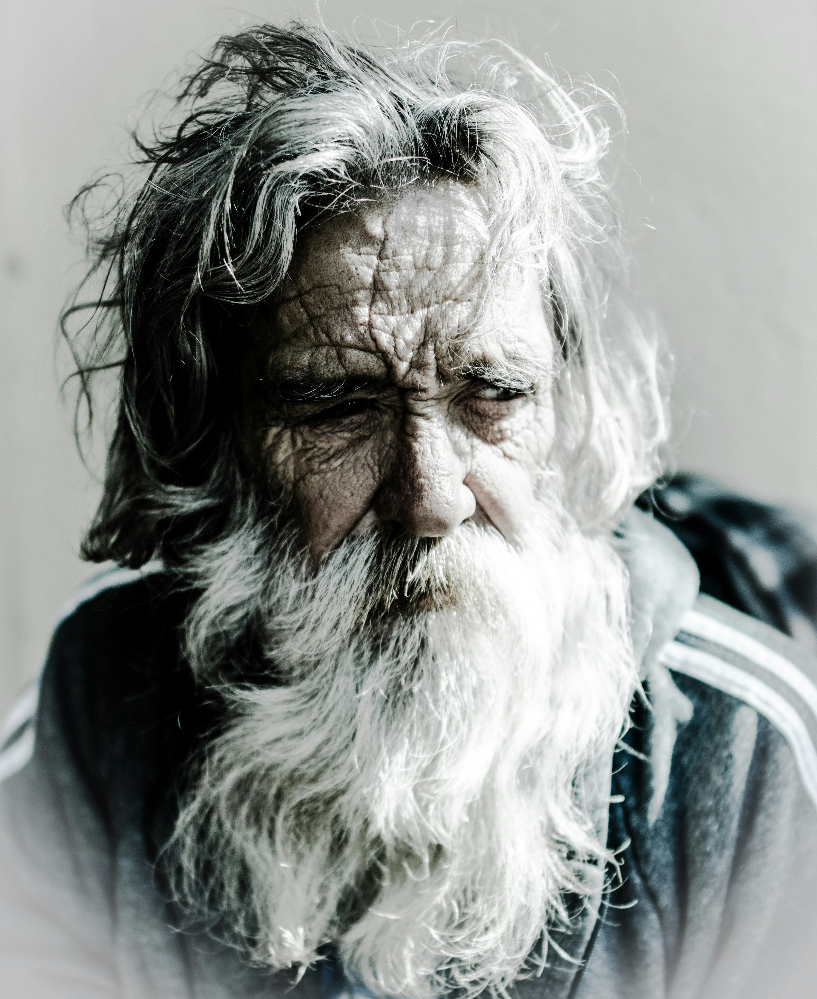

Xildhibaan ka tirsan Aqalka sare ee Baarlamaanka Soomaaliya
Xaaji Diiriye waa nin Soomaaliyeed oo caan ku ah ganacsiga iyo horumarinta bulshada. Waxa uu ku dhashay magaalada Muqdisho, Soomaaliya, wuxuuna ku barbaaray deegaankaas. Xaaji Diiriye wuxuu leeyahay xirfado badan oo ay ka mid yihiin ganacsiga, maalgashiga, iyo horumarinta bulshada. Waxa uu sidoo kale caan ku yahay taageerada uu siiyo bulshada Soomaaliyeed iyo dadaalka uu ugu jiro horumarinta dalka. Xaaji Diiriye waa qof aad u shaqo badan oo leh aragti fog oo ku saabsan horumarinta Soomaaliya.